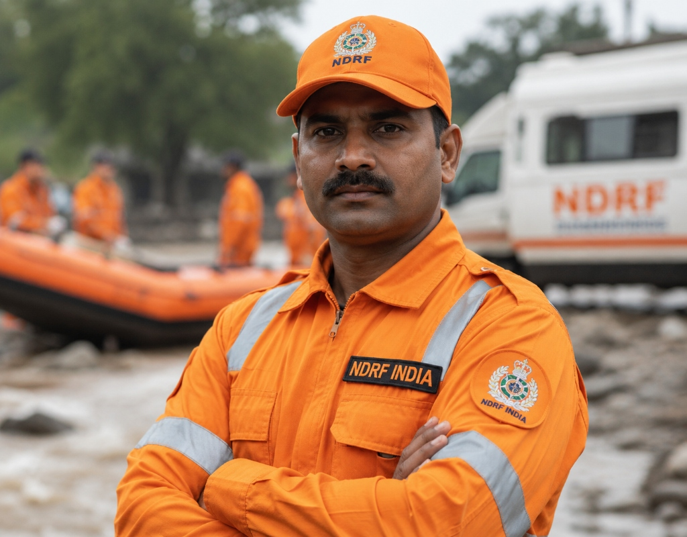

RESTEASE
A phygital disaster response system for Kerala Landslides.
Kerala Landslide Crisis
Wayanad, Idukki, and Malappuram districts in the Western Ghats of Kerala are highly vulnerable to sudden, catastrophic landslides. Heavy monsoon precipitation, coupled with extensive deforestation and human soil interventions, destabilizes steep hillsides and amplifies soil erosion, triggering rapid slope failures.
Communication Blackout
When a major landslide hits, power lines, access roads, and cellular towers are destroyed in seconds. Rescue teams are plunged into complete communication blackouts, forcing squads to operate offline-first to coordinate life-saving search and recovery efforts.
Rainfall vs. Landslide Risk Threshold
Wayanad Monsoon Danger ZonesOf landslides in Wayanad occur during the peak monsoon season (July–Sept). High risk mandates offline location tracking and automatic GPS sharing.
Ground level response
Field responders face physical drain and communication blackouts under severe monsoons. System constraints require a new kind of physical hardware and digital telemetry network.
Physical Hardware: The Rescuer Stretcher

FIELD ROLE & SCENARIO
Rajesh leads a 12-member squad in landslide zones. The steep hillsides are prone to continuous slides, cellular signals are non-existent, and physical exhaustion drains the squad.
Optimized for Heavy-Duty Field Usage
Based on field observations and interviews with rescue personnel, the physical stretcher was designed to address the most critical challenges encountered during landslide evacuations.
Carrier Fatigue & Slips
- Self-leveling pivot hinge for stable patient transport.
- Torso harness for ergonomic load redistribution.
Communication Blackouts
- Offline rescue teams location tracking.
- Route logging and safest path recommendations.
Rescuer Stretcher Engineering
To solve the landslide rescue bottleneck, the RestEase physical stretcher is designed to reduce the physical toll on carriers and transmit vital telemetry automatically, requiring zero direct touchscreen interaction from field rescuers in harsh monsoon rains.
Self-Leveling Pivot Hinge
Compensates for steep >30° slopes, automatically keeping the casualty stable and preventing slips.
Weight Distribution Torso Harness
Shifts carrying load from hands to chest/hips, leaving rescuers' hands free for terrain balance.
Embedded IoT GPS & SOS Transceiver
Automatically logs stretcher location and SOS alerts via off-grid radio/satellite ping loops.
The Mission Control
Mission Command and Scenario
As Mission Commander, Anjali leads all rescue operations from Base Camp. She supervises rescue fleet readiness, dispatches teams in response to SOS alerts, oversees equipment allocation and maintenance, and coordinates logistics to support ongoing field missions.
Optimized for Base Camp Operations
Based on observations of command center workflows and emergency logistics, the RestEase app was designed to address the operational challenges faced by mission commanders during landslide rescue operations.
Limited Visibility of Field Teams
- Live GPS tracking of dispatched rescue units.
- Automated SOS alerts with precise location sharing.
Inventory & Fleet Management
- Live inventory tracking and equipment assignment.
- Fleet dashboard with stretcher availability and deployment status.
How the System works
The RestEase App applies systems thinking to enable the Rescue Base Camp to monitor rescue teams by automatically receiving GPS coordinates from each stretcher. It also records evacuation routes, helping identify and recommend safer paths for future rescue missions based on previously traversed terrain and rescue outcomes.
District Control Operations
Interact with the live, working rescue telemetry dashboard. Check the GPS satellites, respond to SOS alerts, and simulate off-grid connection drops.